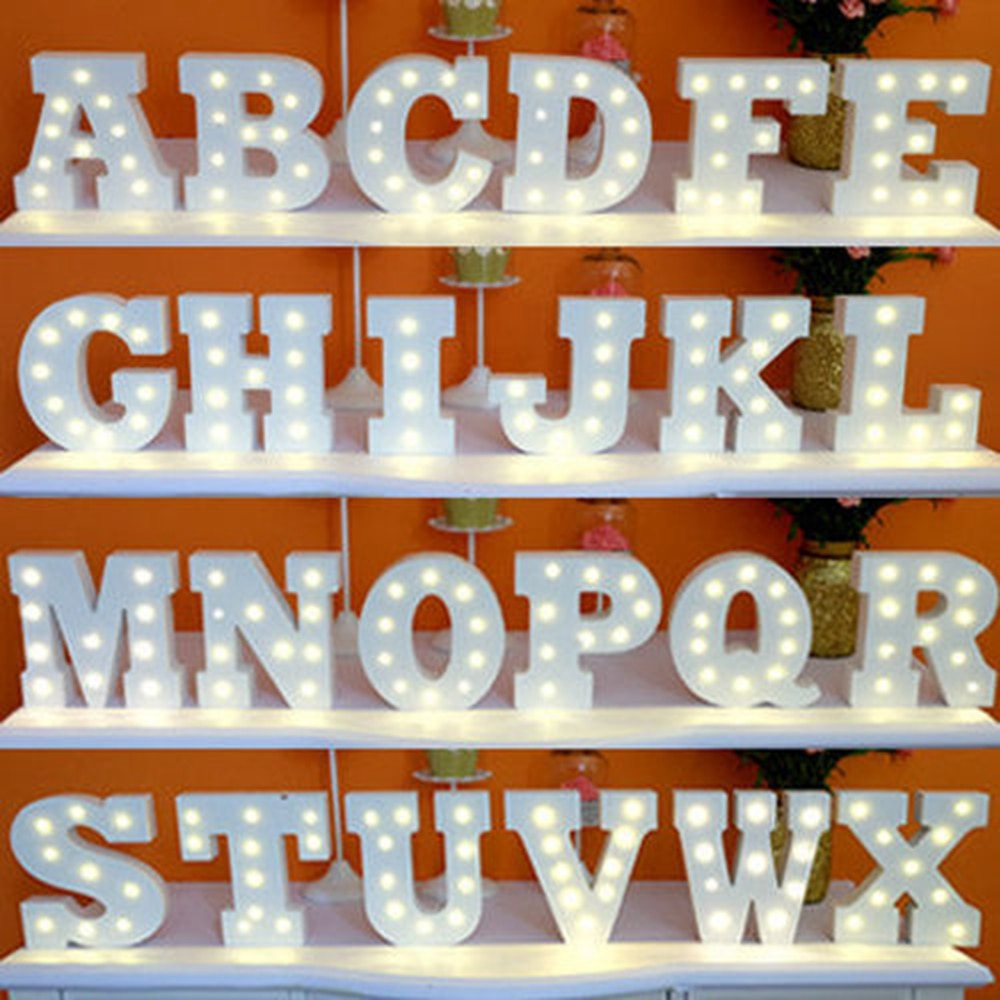

Naktiniai žibintai ant akumuliatorių (29 nuotraukos): vaikų belaidžio stalo ir sienų lemputės kambaryje
- Mieli LED „Flamingo“ vienaragio naktiniai žibintai ...
Gintaro baldai naktiniai staliukai Jūsų miegamajam – vienas geriausių pasirinkimų, norintiems organizuoti patogią, jaukią, tvarkingą ir skoningą erdvę apie savo lovą, tačiau nenorintiems mokėti krūvos pinigų už naktinį staliuką.Gintarobaldai.lt svetainėje rasite modernaus ir klasikinio dizaino naktinių staliukų itin žema kaina. - Naktiniai staliukai | Gintaro baldai
Naktiniai žibintai. Naujos prekės Naujas geležies virtuvės ritininis popierinis rankšluosčių laikiklis tualetinio popieriaus laikiklis Audinių laikymo stovas Kabineto kabyklos lentynų virtuvės organizatorius EUR € 11.10 Išparduota. 2018 virtuvė Nešiojama pakabinamoji drenažo dėžė Nuleidimo lentynos krepšelis Vonios laikymo ... - Naktiniai žibintai ant akumuliatorių (29 nuotraukos ...
Ultravioletiniai prožektoriai ir žibintuvėliai. Ultravioletinis žibintuvėlis su savo UV šviesa padės jums atpažinti netikras kupiūras, padės gintaro paieškoje, žvejyboje flourescenciniais masalais, rasti skysčių nutekėjimą automobilyje ir kitose situacijose. - LED naktiniai žibintai (40 nuotraukų): vaikų medienos ...
LED naktiniai žibintai - tai ateities žibintai, kurių išskirtiniai bruožai yra išskirtinai ilgas tarnavimo laikas ir didelis funkcionalumas. Produktai plačiai naudojami miesto apartamentuose ir kaimo namuose, jie lengvai integruojami į šiuolaikinį interjerą. - Naktiniai žibintai - Internetinė Parduotuvė
Naktiniai žibintai - Geriausios kainos, greitas pristatymas, kokybės užtikrinimas! Ateikite ir pasirinkti. Mūsų parduotuvė laukia tavęs. - Naktiniai žibintai žmonių partijos Įvykiai tapetai ...
Prekės tipas: „Night LightsIs“ baterijos: Nenaudojama: „HolidayModel“ numeris: L3D478Sertifikacija: RoHS, ce, FCC, EMCPower Šaltinis: Sausi akumuliatoriai ... - Naktiniai naktiniai žibintai nuo drugelio prie lovos ...
Naktiniai žibintai ant baterijų - puikus pasirinkimas kūdikio kambariui. Stiprybės ir trūkumai. Vaikų naktiniai žibintai ant baterijų turi neabejotinų pranašumų, todėl jie yra paklausūs. Pagrindinis šio priedo privalumas yra jo saugumas. Jis gali dirbti visą naktį, o tėvai bus ramūs, kad jų kūdikis būtų visiškai apsaugotas. - Šviestuvai, Žibintai | Gintaro baldai internetu
Naktiniai staliukai, veidrodžiai (8) Lovos (27) Vaikų ir jaunuolių kambario baldai (46) Lentynos (8) Kabyklos (2) Komodos (8) Vaikiškos kėdės (55) Lovos (9) Komplektai (6) ... Žibintai, žvakidės, žvakės Puslapyje rodyti: Filtruoti: Grįžti atgal. Kaina. Filtruoti ... - Naktiniai žibintai (84 nuotraukos): naktinis lemputė ...
Kokie įdomūs naktinio apšvietimo modeliai šiandien? Pavyzdžiui, naktinis lemputė miegamajame su mėnulio forma su judesio jutikliu bus įdomus visiems ir taps namo akcentu. Suaugusiųjų lempos gali būti aprūpintos žadintuvu, o vaikams - vaiko verkimo funkcija. - 11 naktinių žibintų, kurie jūsų vaiko kambaryje atrodys ...
Naktiniai žibintai gali atrodyti kaip šiek tiek smulkūs, palyginti su visa kita, kas jums reikia, kad užbaigtumėte savo vaiko erdvę, bet jie taip pat yra labai svarbūs - jie daro vaikus jaustis patogiai tamsoje, o tai reiškia, kad jie gauna daug naudos. Taigi, jūs žinote, kad jūs taip pat galite padaryti kuo mielesnius.

Apartamentai Namas Kraštovaizdžio dizainas Pastatai Remontas Dizainas ir išdėstymas Durys ir arkos Apšvietimas Baldai Tekstilė Įėjimas salėje Svetainė Miegamasis Spinta Lodžijos ir balkonai lt.decorexpro.com Apšvietimas Šviestuvai
Akumuliatoriaus naktinė šviesa
Stiprybės ir trūkumai Rūšis Kaip pasirinkti? Papildomos funkcijos Kur pakabinti?Labai svarbus vaikų kambario dizaino priedas yra naktinė šviesa. Naujagimiui reikia visą parą mamos dėmesio. Patrauklus, mažas naktinis apšvietimas nuramins vaiką, neįskaitant pagrindinės šviesos. Naktiniai žibintai ant baterijų - puikus pasirinkimas kūdikio kambariui.
Stiprybės ir trūkumai
Vaikų naktiniai žibintai ant baterijų turi neabejotinų pranašumų, todėl jie yra paklausūs. Pagrindinis šio priedo privalumas yra jo saugumas. Jis gali dirbti visą naktį, o tėvai bus ramūs, kad jų kūdikis būtų visiškai apsaugotas.
Norint įdėti papildomą šviesos šaltinį, šalia lovelės būtina turėti maitinimo lizdą. Kartais kambario išdėstymas neleidžia perkelti lizdo. Net jei tokia galimybė egzistuoja, geriau tai padaryti ne dėl vaiko saugumo. Geras pasirinkimas būtų baterija maitinamas naktinis apšvietimas.
Šiuolaikiniai gamintojai siūlo platų stilingų, neįprastų ir originalių belaidžių naktinių žibintų, drabužių segtuvų pasirinkimą. Šiai galimybei būdingas judumas. Jis gali būti lengvai išdėstytas bet kurioje patalpoje. Jis lengvai pritvirtinamas prie lovelės, antklodės ar užuolaidos pusės.
Pagrindinis tokių įrenginių trūkumas yra tai, kad jie dirba tam tikrą laiką. Būtina periodiškai pakeisti baterijas.
Norint taupyti pinigus ir nenaudoti baterijų kiekvieną kartą, verta nusipirkti bateriją, kuri leis jums pakartotinai naudoti tas pačias baterijas. Akumuliatorius maitinamas elektros energija.
Rūšis
Šiandien kiekvieną naktį galite nusipirkti naktinius žibintus. Parduodami yra įvairių spalvų, įvairių formų ir dydžių, tekstūrų ir dizaino modeliai:
Sieninis montavimas. Sienos lempos pritraukia dėmesį neįprastu dizainu. Jie pateikiami kaip clothespins. Jis gali būti pritvirtintas prie bet kokio elemento, todėl jis lengvai juda aplink kambarį. Patogumas yra labai svarbus kriterijus norint pasirinkti tokius modelius.Ši parinktis yra geriausias vaiko kambario pasirinkimas. Naktinės šviesos šviesa yra nedidelė ir apima mažą plotą.
Valdyba Visos jūsų mėgstamos klasikos stalo lempos. Jis gali būti naudojamas bet kuriame kambaryje. Stalinis modelis padės papuošti svetainės, miegamojo ar vaikų kambario interjerą. Daugelis žmonių nori įdiegti darbalaukio parinktį šalia lovos. Tai leidžia įjungti arba išjungti šviesą, netgi išlipant iš jos.Tokias galimybes apibūdina nutildyta šviesa, bet jei naudojate didelės galios lemputę, galite net skaityti mėgstamą žurnalą ar knygą.
Naktinis šviesos žaislas Šis priedas puikiai tinka vaikų kambario dekoravimui ir puikiai tinka ir suaugusiųjų miegamojo dizainui. Šiuolaikiniai gamintojai siūlo platų asortimentą, kur kiekvienas gali pasirinkti originalų ir madingą versiją. Dizaineriai neriboja išgalvoto skrydžio kurdami naujus modelius.Daugelis pageidauja naktinio apšvietimo mygtuko, nes įjungia arba išjungia tik vieną paspaudimą.
Naktinio apšvietimo projektorius. Moderniausias modelis yra naktinio apšvietimo projektorius. Jis pateikiamas kaip lubų forma, per kurią ant lubų matomi įvairūs skaičiai ar brėžiniai. Naktinis žvaigždėtas dangus atrodo labai gražus ir įdomus. Šis paveikslėlis tikrai padės atsipalaiduoti ir nuraminti. Kiekvienas prietaiso projektorius yra neįprastas ir ryškus vaizdas. Protingas naktinis apšvietimas. Išplėstinis modernumo modelis yra „protingas“ naktinis apšvietimas. Jame yra įmontuotas judesio jutiklis, todėl šviesa įsijungia tik judant. Galite pasirinkti muzikos parinktis, kurios automatiškai įjungiamos, pradeda žaisti malonią melodiją. Šio modelio mygtukas nėra, nes pats prietaisas nusprendžia, kada reikia įjungti arba išjungti šviesą.Praktiškumas ir patogumas yra „protingos“ naktinės šviesos stiprybės. Ši parinktis tinka vaiko ir tėvų kambaryje.
Kaip pasirinkti?
Daugelis tėvų nemoka pakankamai dėmesio renkantis naktinę šviesą baterijose, o tai yra labai rimta klaida. Todėl šis prietaisas turi būti saugus kūdikio sveikatai Renkantis, reikia apsvarstyti daug veiksnių:
Pirmiausia reikia pažvelgti į medžiagą, iš kurios gaminama naktinė šviesa. Nerekomenduojama įsigyti plastikinių modelių. Yra žinoma, kad šildant, ši medžiaga skleidžia kenksmingų medžiagų, o kai kuriais atvejais - nemalonų kvapą; Labai svarbu yra šviesos ryškumas. Ji turėtų pasiimti naktinę šviesą su šviesiai apšviesta, tačiau ji turėtų būti gerai apšviesta bent maža erdvė. Minkšta šviesa idealiai tinka vaikų darželiui, verta atkreipti dėmesį į geltoną atspalvį. Šviesūs naktiniai šviestuvai blogai veikia kūdikio svajonę ir jo psichiką.Papildomos funkcijos
Tarp plataus asortimento naktinių lempučių baterijose galite pasirinkti kiekvieną skonį. Papildoma patalpų apšvietimo funkcija gali būti:
Muzika Šilta šviesa kartu su ramus lopšinės muzika greičiau nuramins kūdikį. Jei nuspręsite įsigyti modelį su muzika, tuomet turėtumėte neabejotinai klausytis pateiktų kompozicijų. Verta vadovautis maloniais ir ramiais melodijomis. Tokie modeliai turi turėti nutildymo mygtuką muzikos funkcijai; Projektavimas Vaikų kambariuose dažnai parenkami naktiniai žibintai su įmontuotu projektoriumi. Vaikai mėgsta prieš miegą pažvelgti į žvaigždėtą dangų arba žiūrėti plaukiojančias žuvis. Dėl baterijų buvimo projektorius gali būti bet kurioje patalpoje; Jutiklinis jutiklis Modeliai su šia funkcija yra nepriklausomai įjungti arba išjungti. Prietaisas veikia tamsoje ir išsijungia, kai kambarys tampa ryškus. Ši parinktis yra brangi, todėl ji nėra prieinama visiems. Nepamirškite, kad jutikliui reikia atsargaus požiūrio. Tai pailgins jos gyvenimą.Kur pakabinti?
Naktinis apšvietimas baterijose gali būti užkabintas arba pakabintas bet kur. Jis atrodys gražus ant sienos, šalia lovelės ar vaikų kambario užuolaidos. Aptariant, kur geriau pakabinti naktinį apšvietimą, verta atitikti du pagrindinius reikalavimus:
Šviesa neturėtų patekti į vaiko akis. Tai sutrikdys garso miegą, o vaikas negalės visiškai atsipalaiduoti; Naktinė šviesa turėtų suteikti tiek daug šviesos, kad motinai būtų patogu kreiptis į kūdikį ir duoti žinduką ar pakeisti vystyklą.Naktinio apšvietimo projektorius jūsų vaikui gali būti lengvai pagamintas nepriklausomai nuo laužo medžiagų. Išsami meistriškumo klasė pateikiama žemiau esančiame vaizdo įraše:
Įvertinkite šį straipsnį
Bendrinkite su draugais
Kas yra „Lego“ plyta? Plyta „Lego“ Plytos „Lego“ gamyba sau ir verslo idėjai Plytų „Lego“ darbų pavyzdžiai Lego-plytų tipai: ką turėtumėte atkreipti dėmesį gamybos metu? Kaip pasirinkti „Lego“ plytų gamybos įrangą? Padarykite tai patys Pataisyti durų spynos Su savo rankomis gaminame vaikų skaidrę Kaip siūti lapą ant elastinės juostos lovelėje su savo rankomis? Kaip padaryti rankšluosčius iš rankšluosčių? Kaip padaryti, kad jūsų rankomis būtų pagaminti kalėdiniai žaislai? Komentarai Rekomenduokite skaitymą Lauko sienos žibintai Apranga ant drabužėlių Lempų lempos Pakabinamų lubų šviestuvai LED sieniniai žibintai Lubų žibintai LED šviestuvai Šviestuvai su judesio jutikliu Apšvietimas ant miegamojo staliuko Informacija pateikiama referenciniais tikslais. Statybos klausimais visada pasitarkite su specialistu. Mūrinis Betonas Fondas Apdailos medžiagos Apie projektąRedakcinis kontaktas:
chinateampro2015@gmail.com
lt.decorexpro.com, 2015-2019
Visos teisės saugomos, 14+
Kopijuoti svetainės medžiagą galima tik tada, jei įdiegiate aktyvią nuorodą į mūsų svetainę.
Įėjimas salėje
Svetainė
Miegamasis
